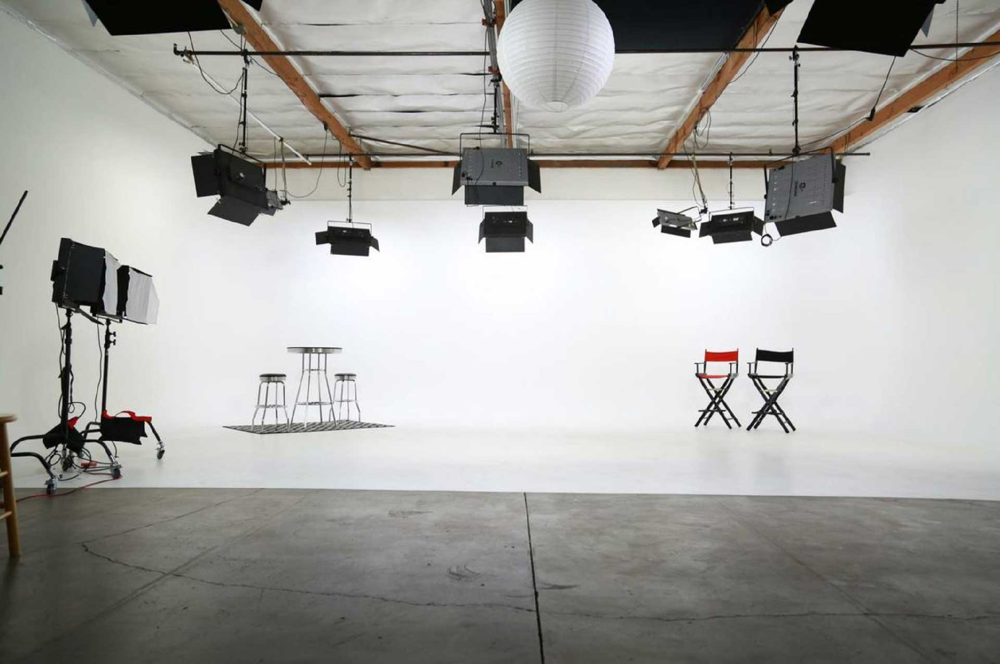

{% extends "layouts/_layout.html" %}

{% block content %}

<section class="section section__case wrap clearfix">

  <div class="wrap_content clearfix">

    <div class="case__showreel">
      <div class="video-block">
        <iframe width="560" height="315" src="https://www.youtube.com/embed/4SnkLpoMiwA?controls=0" frameborder="0" allow="accelerometer; autoplay; encrypted-media; gyroscope; picture-in-picture" allowfullscreen></iframe>
      </div>
    </div>


    <div class="case__arr_all">
      <a href="#" class="case_nav_link"></a>
    </div>
    <div class="case__arr_next"></div>
<!--       <a href="#" class="s_case__nav_2all s_case__nav_link">Вернуться к кейсам</a>
      <a href="#" class="s_case__nav_2next s_case__nav_link">
        <div>
          
          <p>Cмотреть следующий</p>
        </div>
      </a> -->


  </div>

</section>

<!--   <section class="section section__case wrap clearfix">
    <div class="wrap_content clearfix">
      <div class="s_case__desc"></div>
      <div class="s_case__demo"></div>
      <div class="s_case__desc_2">
        
        <p class="task">ЗАДАЧА</p>
        <div class="desc">В декабре 2018 года, нас пригласили снять интервью с известным архитектором и сооснователем британской дизайн-студии «Project Orange» - Кристофером Эшем. В Санкт-Петербурге студия реализует проект дизайна интерьеров клубного дома Art View House.</div>

        <ul class="tags">
          <li class="tag">VIDEO</li>
          <li class="tag">MOTION</li>
        </ul>
      </div>

      <div class="s_case__desc_3">
        <h2 class="title s_case__title">Философия дизайна</h2>

        <div class="wrap__video">
          <iframe width="600" height="480" src="https://www.youtube.com/embed/4SnkLpoMiwA" frameborder="4px" allow="autoplay; encrypted-media" allowfullscreen></iframe>
        </div>
      </div>

      <div class="s_case__nav">
        <a href="#" class="s_case__nav_2all s_case__nav_link">Вернуться к кейсам</a>
        <a href="#" class="s_case__nav_2next s_case__nav_link">смотреть следующий</a>
      </div>
    </div>
  </section>
 -->

{% endblock %}
